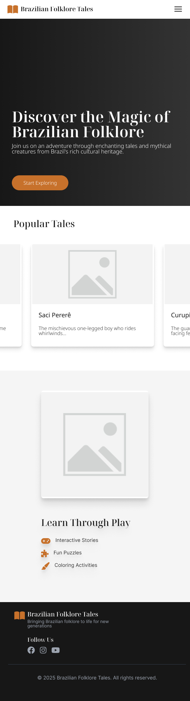
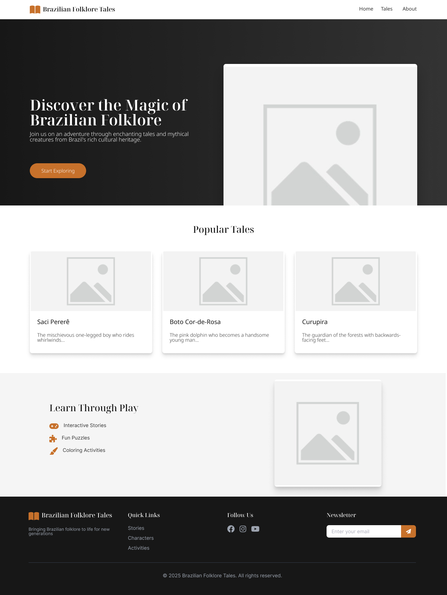

Site Purpose
This website will serve as a fun and educational hub for children to explore and learn about Brazilian folklore. The site will provide:
- Detailed profiles of mythical creatures and characters, complete with fun facts and colorful illustrations.
- A collection of short stories and legends from different regions of Brazil that highlight the cultural significance of these myths.
In the future, I may add buttons for features like Interactive Stories, Fun Puzzles, and Coloring Activities to enhance user engagement, but these are not planned for the initial release.
Target Audiences
- Children: Kids who are curious about myths and legends and enjoy exploring colorful illustrations and engaging stories.
- Parents: Adults looking for educational and culturally enriching content to share with their children.
Color Schema
The website will use the following color scheme:
- Primary Color: Burnt Orange (#c7712b) – Used for headings, navigation links, and accents to evoke warmth and vibrancy.
- Secondary Color: Charcoal Black (#171717) – Applied to backgrounds and highlights for a bold and modern look.
Typography
Two fonts are selected for the site:
- Noto Serif Display: Applied to headings for a classic and elegant look.
- Noto Sans: Used for body text to ensure clarity and readability across all devices.
Wireframe
The wireframe below represents the home page layout for both mobile and desktop views:
Mobile View

Desktop View
